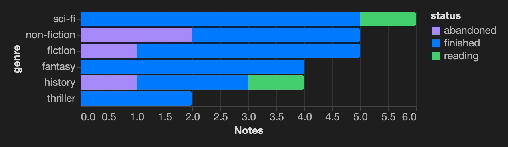
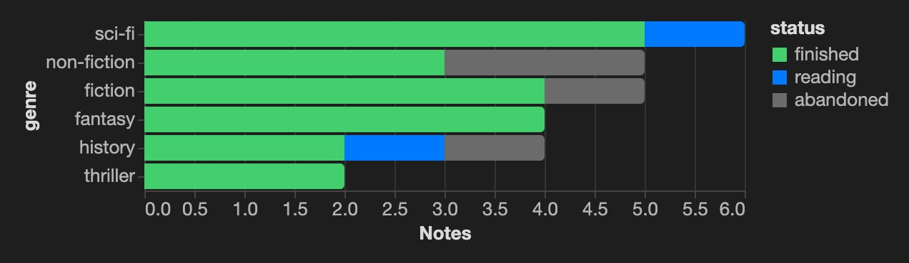
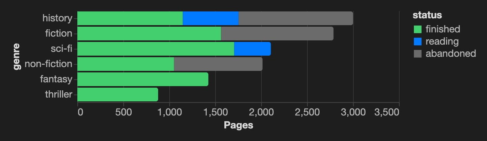
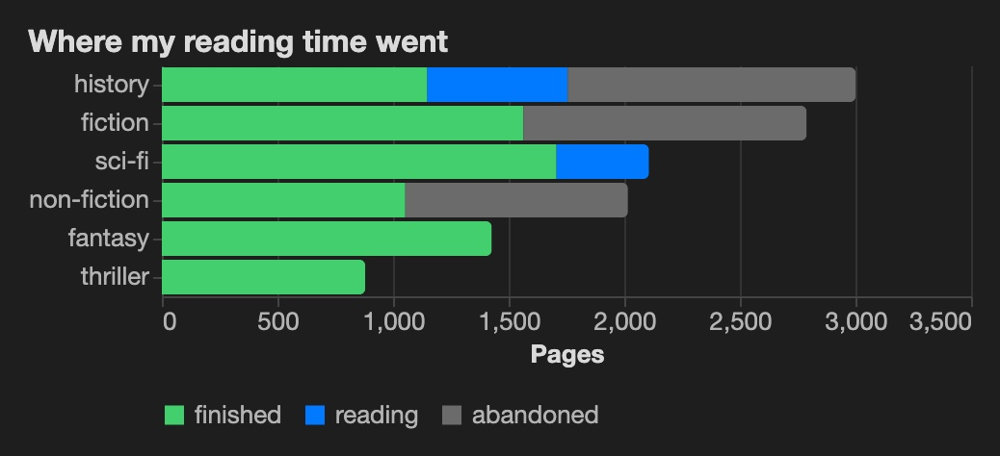
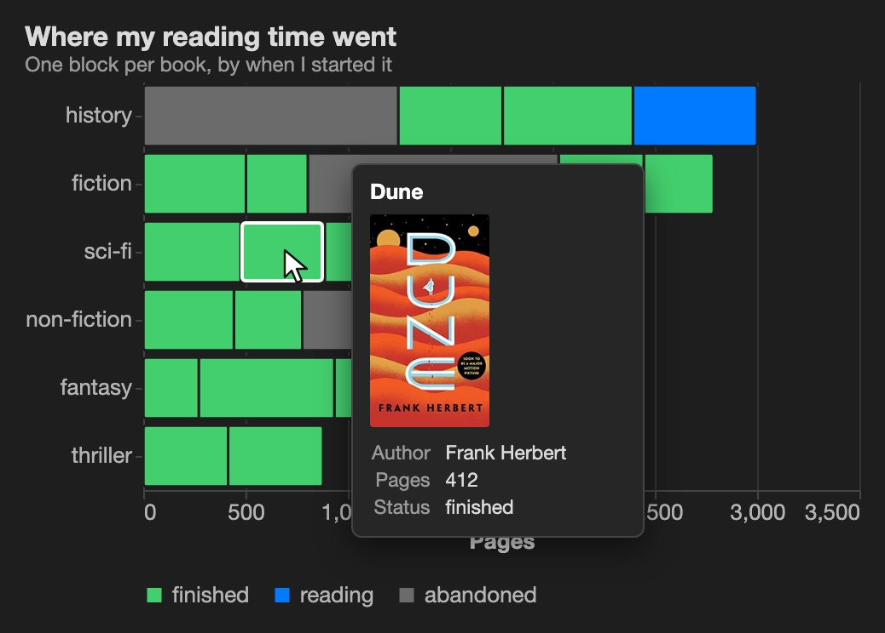
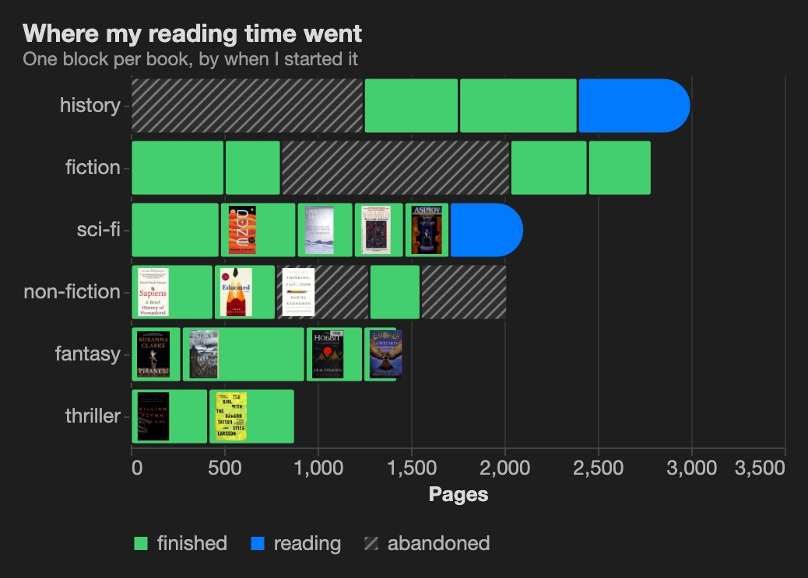

quickstart
Your first chart, step by step.
A hands-on walk-through: 26 book notes become a chart of what you read, then a bookshelf with covers in the tooltip. About fifteen minutes. Grab the starter files to follow along, or use notes of your own.
Before you start: Obsidian 1.13 or later with the core Bases plugin on, and Agate installed and enabled under Settings → Community plugins. Until Agate is listed there, copy main.js, manifest.json and styles.css from the latest release into .obsidian/plugins/agate/.
1 notes
Start with notes that have properties.
A chart draws properties, so the first step happens in your notes. Each book is one note, and its frontmatter holds the facts about it: who wrote it, the genre, how long it is, whether you finished it.
---
type: book
author: Frank Herbert
genre: sci-fi
pages: 412
rating: 5
status: finished
started: 2025-04-30
finished: 2025-05-09
---- Use the same property names in every note:
genre, notGenrein one andcategoryin another. - Write numbers as numbers (
412) and dates asYYYY-MM-DD, so Obsidian types them and the chart can do maths. - A property like
type: bookmakes the notes easy to pick out in the next step.
Follow along: download the starter and unzip it into the root of a vault. You get a Reading folder with the 26 book notes (made up, from Agate's demo vault), plus the files for the next steps. Or browse the notes on GitHub.
Frank Herbert, 412 pages. Read in 9 days, ★★★★★.
Notes
· Slow start, worth it after the first third.
2 base
Let a base pick the notes.
A base is Obsidian's query over your notes: a filter, the columns to show, a sort. Create one with New base from the file menu, or open Books.base from the starter. Here it keeps every note with type == "book".
filters:
and:
- type == "book"
views:
- type: table
name: Shelf
order: [file.name, author, genre, pages,
status, started, finished, rating]
sort:
- property: started
direction: DESCYou rarely write this by hand: Filter, Properties and Sort in the toolbar write it for you. Every column you can show is a field the chart can draw, named by its property id: note.genre, note.pages, file.name.
The file: Books.base on GitHub. The demo vault's richer version is Reading.base.
| file name | author | genre | pages | status | rating |
|---|---|---|---|---|---|
| SPQR | Mary Beard | history | 608 | reading | |
| The Three-Body Problem | Liu Cixin | sci-fi | 400 | reading | |
| Lincoln in the Bardo | George Saunders | fiction | 343 | finished | 4 |
| Foundation | Isaac Asimov | sci-fi | 244 | finished | 4 |
| The Girl with the Dragon Tattoo | Stieg Larsson | thriller | 465 | finished | 3 |
| The Silk Roads | Peter Frankopan | history | 636 | finished | 4 |
| A Wizard of Earthsea | Ursula K. Le Guin | fantasy | 183 | finished | 4 |
3 chart
Add a chart view.
In the base, open the view menu and Add view, then set its layout to Agate chart. The empty view offers two ways in.
With a recipe
- Click Pick a recipe and choose Notes per category.
- Set Category to
genreand Colour by tostatus. - Keep the file name
bars-genre.vl.jsonand click Create chart.
Agate writes the spec into charts/ and points the view at it. The chart appears straight away.
Or with an assistant
Click Copy prompt for an LLM. The prompt holds your base's properties, a few sample notes and the rules a working Agate spec follows. Paste it into any assistant, describe the chart in plain words, save the reply as a .vl.json file and pick it as the view's Spec file.
I use Obsidian with the Agate plugin, which renders
Vega and Vega-Lite specs over an Obsidian Bases view.
Write a chart spec for me.
## What I want
Books per genre as horizontal bars, coloured by status.
## Data
The spec receives the notes of an Obsidian base
(view "Shelf"), 26 notes, as a dataset named `base`.
…
Properties in this base:
- `note.genre` (text)
- `note.pages` (number)
- `note.status` (text)
…Either way, this is the spec: bars-genre.vl.json. It is also in the starter, already wired to the base's Genres view.
- Timeline
- Notes per category
- Headline numbers
- Scatter plot
- Histogram
- Line over time
- Calendar heatmap
- Folder sunburst
- … 6 more
Horizontal bars counting notes by a property. Sort the bars from the Bases toolbar.
4 spec
Read the spec, then make it yours.
The spec is plain Vega-Lite JSON. Read it top to bottom: the data is the base's notes; a bar mark; the genre down the side, a count along the bottom, colour from the status. The filter drops books with no genre.
{
"$schema": "https://vega.github.io/schema/vega-lite/v6.json",
"data": {
"name": "base"
},
"mark": {
"type": "bar",
"tooltip": true,
"cornerRadiusEnd": 3
},
"encoding": {
"y": {
"field": "note.genre",
"type": "nominal",
"sort": "-x",
"title": "genre"
},
"x": {
"aggregate": "count",
"title": "Notes"
},
"color": {
"field": "note.status",
"type": "nominal",
"title": "status"
}
},
"transform": [
{
"filter": "isValid(datum[\"note\"][\"genre\"]) && datum[\"note\"][\"genre\"] !== ''"
}
]
}Where to edit it. Obsidian has no JSON editor of its own, so install one plugin once: the JSON Editor community plugin (source and tree views, desktop and mobile). Then hover the chart and click Edit spec ({ }, top right), or run Agate: Edit the spec of the last chart: the spec opens to the left of the chart, and every save redraws it. Settings → Agate → Editing specs links to the plugin and can show .json files in the file explorer.

Four small edits, each a few lines, and one for when you want more. Make them one after another in the spec beside the chart and watch it change on every save.
4.1
Pick the colours
Vega-Lite chose a palette for the three statuses. Give each its own colour with a scale on the colour channel: green for finished, blue for reading, grey for abandoned.
"color": {
"field": "note.status",
"type": "nominal",
"title": "status",
"scale": {
"domain": ["finished", "reading", "abandoned"],
"range": ["#44cf6e", "#027aff", "#6b6b6b"]
}
}
4.2
Count pages, not books
Swap the count for a sum of a number property. Now each bar shows how many pages of that genre you got through: history is long, thrillers are quick.
"x": {
"aggregate": "sum",
"field": "note.pages",
"title": "Pages"
}
4.3
Title it, tidy the legend
Add a title at the top level, drop the axis title the title now explains, and move the legend under the chart.
"title": {
"text": "Where my reading time went",
"anchor": "start"
},
"encoding": {
"y": { …, "title": null },
"color": { …, "legend": { "orient": "bottom", "title": null } }
}
4.4
One block per book, with its cover
Split each bar into its books: detail draws one block per note, order lines them up by when you started, a thin dark stroke separates the spines, and "height": {"step": 40} gives every genre a 40px row, room for a cover later. Now the chart reads like a shelf: the grey doorstoppers you gave up on stand out.
Then put the cover in the tooltip. Add a formula to the base that turns each book's isbn into an Open Library cover URL:
formulas:
cover: if(isbn, "https://covers.openlibrary.org/b/isbn/" + isbn + "-M.jpg", null)and list it in the tooltip with the title image: Agate draws that field as a picture, and the one titled title as the heading. Hover a block to see the book; click it to open the note.
"height": { "step": 40 },
"mark": { "type": "bar", "stroke": "#1e1e1e", "strokeWidth": 1.5 },
"encoding": {
…,
"detail": { "field": "file.name" },
"order": { "field": "note.started", "type": "temporal" },
"tooltip": [
{ "field": "file.name", "title": "title" },
{ "field": "formula.cover", "title": "image" },
{ "field": "note.author", "title": "Author" },
{ "field": "note.pages", "title": "Pages" }
]
}The finished spec: bookshelf.vl.json, also in the starter with the formula, as the base's Bookshelf view.

4.5 · going further
Covers on the spines, an open end for what you're reading, hatching for what you dropped
To draw on top of each block you need its position, so compute the stack yourself: a stack transform gives every book its start and end (x0, x1). Then layer three marks on the same positions: the finished and abandoned books as plain blocks, the books still in progress with a rounded, open right end, and each cover as a small image at the start of its block.
"transform": [
…,
{ "stack": "pages", "groupby": ["genre"],
"sort": [{ "field": "started" }], "as": ["x0", "x1"] }
],
"layer": [
{ "transform": [{ "filter": "datum.status !== 'reading'" }],
"mark": { "type": "bar", "cornerRadius": 2 }, … },
{ "transform": [{ "filter": "datum.status === 'reading'" }],
"mark": { "type": "bar", "cornerRadiusTopRight": 18,
"cornerRadiusBottomRight": 18 }, … },
{ "transform": [{ "filter": "isValid(datum.cover)" }],
"mark": { "type": "image", "width": 21, "height": 31,
"align": "left", "xOffset": 4 },
"encoding": { "x": { "field": "x0" }, "url": { "field": "cover" }, … } }
]Last, mark the abandoned books as dead ends: an Agate texture hatches them, declared once and used like a colour in the scale, so the legend shows it too (textures work with the SVG renderer).
"usermeta": { "agate": { "textures": {
"abandoned": { "orientation": "diagonal", "size": 7,
"stroke": "#7a7a7a", "background": "#2e2e2e" }
} } },
"range": ["#44cf6e", "#027aff", "url(#abandoned)"]The covers are image marks, so they load only with Settings → Agate → Load remote data on (tooltip pictures don't need it). Books without an ISBN keep a plain block.
The full spec: bookshelf-covers.vl.json, the base's Bookshelf with covers view in the starter.

5 note
Put it where you write.
The chart is a view of the base, so it shows up wherever a base can. Embed it in any note by name:
![[Books.base#Bookshelf with covers]]Or point an agate block at the spec and the base, which leaves the base's own views alone:
```agate
spec: charts/bookshelf-covers.vl.json
base: Books.base
```Add a book note and the bar grows; filter the base to this year and the chart follows.
The numbers above the chart are a spec too: Vega counts and sums over the same base, and Agate shows the result as note text instead of a chart. The starter's Numbers view uses reading-stats.vl.json; how it works is in the guide's big numbers section.
Long year for history; the thrillers went fast. Two books still on the go.
![[Books.base#Numbers]]
![[Books.base#Bookshelf with covers]]
Next up
· Finish SPQR before the trip.
Where next.
The same steps make any chart: different notes, a different recipe or prompt, a different spec.